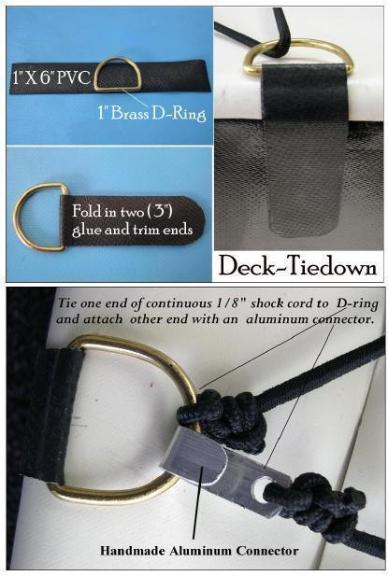

| Deck Rigging (1 of 5) | Menu Previous Page Next Page |
|  |
D-Ring Tie-Downs
The deck tie-downs are made of thin strips of PVC with plastic, brass, or stainless D-Rings attached to secure the 1/8" or 3/16" shock cords. These have proven to be very durable, and are even used to secure the carrying straps.
The shock cords are tied to the forward most D-Ring and laced in a continuous "X" pattern. After lacing, the opposite end of the shock cord is secured to the original D-Ring with an aluminum or stainless connector, either home-made or purchased. As an alternative, both ends of the shock cord can be tied to the D-Ring and one can be untied for dis-assembly. The ends of the shock cords are seared to prevent fraying. (Combi-Single) |